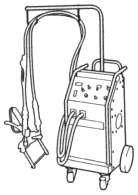
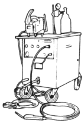
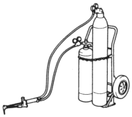
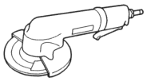
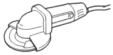
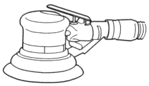

SPOT WELDER

MIG WELDER

GAS WELDER

DISC GRINDER
Grinding of welded flange.

DISC SANDER
Sand off the paint film and use to finish the welded flanges

BELT SANDER
Finish off narrow welded flange.
DOUBLE ACTION SANDER
Featheredge and finish of putty.

LONG ORBITAL SANDER
Sanding putty within the wide range and finish.